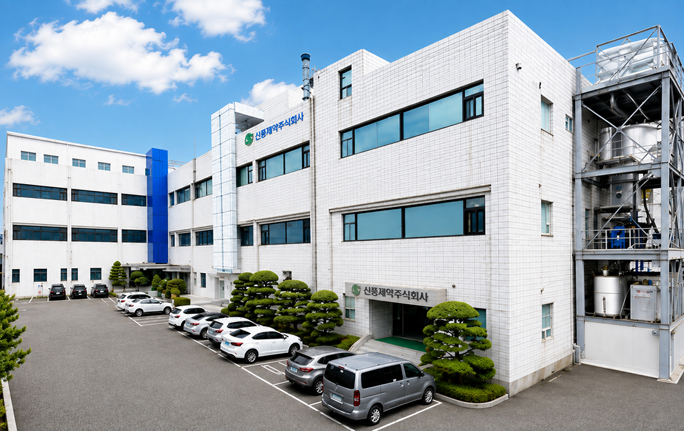
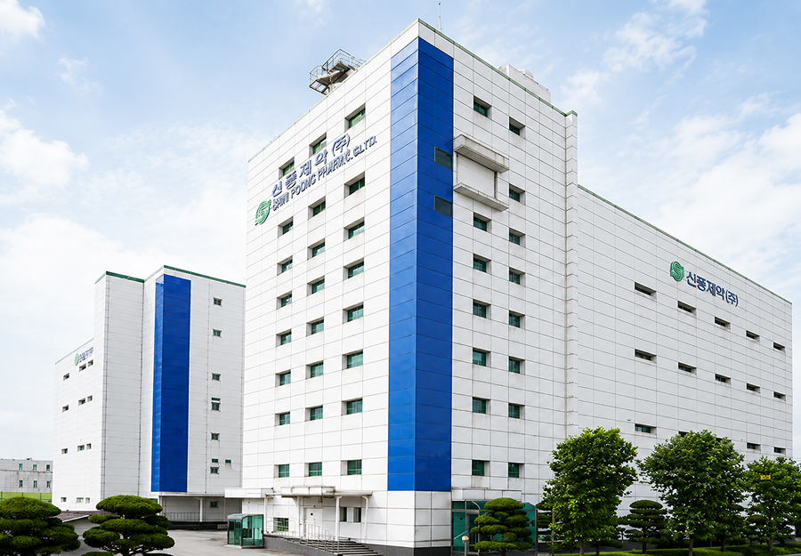
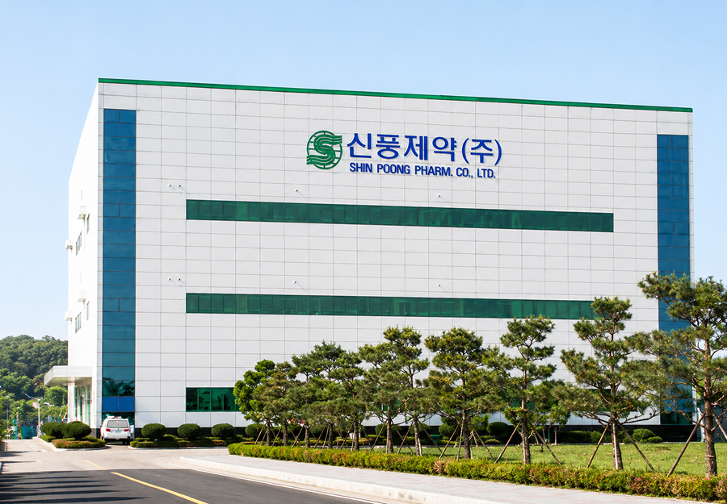

HOME > 제품정보 > 생산시설
생산시설PRODUCTION
품질관리QUALITY ASSURANCE
원자재부터 완제품에 이르기까지 엄격한 품질관리와 GMP 기준에 따른 제조공정을 운영하며,
지속적인 관리와 개선을 통해 우수한 품질의 의약품 생산을 보장합니다.
-
GMP OPERATIONS
- GMP 운영파트
- 원자재부터 완제품까지 체계적인 제조·품질관리 시스템을 운영합니다. 엄격한 품질 기준과 표준화된 공정을 통해 안전하고 신뢰할 수 있는 의약품 생산을 이어갑니다.
-
Registration
- 허가&등록
- 의약품의 안전성과 유효성을 바탕으로 허가 및 등록 절차를 체계적으로 관리합니다. 관련 규정과 기준을 준수하며 제품의 신뢰성과 안전성을 확보합니다.
-
Finished Product
- 완제파트
- 철저한 품질검사와 관리 기준을 통해 우수한 품질의 완제품을 생산합니다. 제조공정 전반의 품질관리를 통해 안정적인 의약품 생산을 이어갑니다.
-
API part
- API 파트
- 원료의약품의 연구개발과 생산을 통해 안정적인 품질과 제조 경쟁력을 확보합니다. 축적된 기술과 생산 경험을 바탕으로 원료의약품의 품질 향상을 이어갑니다.
제조시설MANUFACTURING FACILITIES
-
- 제1공장(안산KGMP)전제형 KGMP지정의
현대적이고 혁신적인 생산시설 - 안산제1공장은 1984년 경기도 안산시 반월공단에 완공된 KGMP 공장으로, 우수의약품 생산을 위한 신풍제약의 제조기반을 마련하며 안정적인 생산체계를 구축해왔습니다.
- 국내외 GMP 기준에 맞춰 지속적으로 시설과 설비를 개선하며, 원료부터 완제의약품까지 일관된 제조공정과 엄격한 품질관리 시스템을 운영하고 있습니다.
- 고형제·연고제·주사제 등 다양한 제형의 의약품을 생산하며, 품질과 생산 효율 향상을 위한 설비 투자를 지속하고 있습니다.

- 제1공장(안산KGMP)전제형 KGMP지정의
-
- 제2공장B동(항말라리아 전용)EU의 GMP기준에 적합한
최첨단 PYRAMAX 공장 - 안산 제2공장 B동은 2008년 항말라리아 신약 피라맥스(PYRAMAX) 생산을 위해 준공된 다목적 GMP 생산시설입니다.
- 최첨단 제조설비와 자동화 시스템을 기반으로 원료의약품과 완제 의약품을 비롯한 다양한 고형제 생산이 가능하며, 국내외 GMP 기준에 대응할 수 있는 품질관리 시스템을 갖추고 있습니다.
- 지속적인 연구개발과 생산시설 투자를 통해 고품질 의약품의 안정적인 생산과 공급을 위한 제조 경쟁력을 강화하고 있습니다.

- 제2공장B동(항말라리아 전용)EU의 GMP기준에 적합한
-
- 제3공장(오송 세파계 항생제 전용)최신 설비와 혁신적인 디자인으로
설계된 세파계 전용 공장 - 오송공장은 충북 오송 생명과학단지에 건설된 세파계 항생제 전용 생산시설로, EU-GMP 기준에 적합한 최신설비와 혁신적인 디자인을 적용했습니다.
- 국내외 GMP 기준에 대응하는 현대적인 제조·품질관리 시스템을 기반으로 안정적인 의약품 생산체계를 구축하고 있으며, 신풍제약의 제품 경쟁력과 글로벌 생산 기반을 강화하는 핵심 시설로 자리하고 있습니다.
- 축적된 제약기술과 경험을 바탕으로 원료의약품 국산화와 수출 확대를 추진하며, 글로벌 제약기업으로 도약하고 있습니다.

- 제3공장(오송 세파계 항생제 전용)최신 설비와 혁신적인 디자인으로